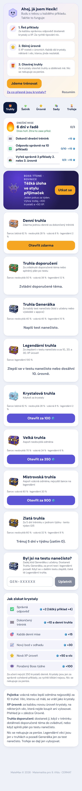

Úroveň 7 · Dnes za učení 0 z 250 💎. Hexík povyroste na Expert od 35 bodů v odhadu.
▼ Odtud dolů beze změny, jak je to dnes v appce

Prototyp: ťukni na tabuli (trénink), na skříň vpravo (šatník), nebo na tlačítko Trénovat.